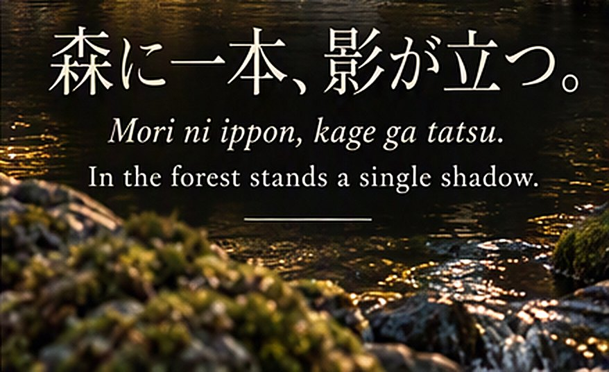
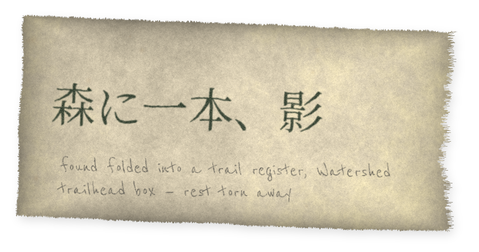

Collection 07 / Series B
Series B · Phrases
Phrase 001
A single line of Japanese text recorded in reports, sketches and materials associated with the subject.
Phrase 001 · as recorded
森に一本、影が立つ。
Mori ni ippon, kage ga tatsu.
In the forest stands a single shadow.
Archive noteThe phrase appears repeatedly in reports, sketches, and materials associated with Bamboo Avenger folklore. Its significance remains uncertain.
PHRASE 001RVF-2009-014
Text .............. 森に一本、影が立つ。
Romanization ...... Mori ni ippon, kage ga tatsu.
Translation ....... In the forest stands a single shadow.
Language .......... Japanese
Wording ........... identical in all occurrences
See also .......... Symbol 001
The translation given is the archive’s standard rendering and is used for indexing only. The phrase has never been recorded in any other wording, and no source in the collection claims to have written it.


Occurrence ledger
9 entries| Year | Medium | Location | Source |
|---|---|---|---|
| 2009 | Chalk on the bridge deck | Lithia Bridge | RVF-2009-014 |
| 2012 | Written on a fogged shelter window | Watershed Trail | Photograph, private collection |
| 2014 | Green ink, torn paper | Watershed trailhead register | Acc. 14.022 |
| 2017 | Recited during interview | — | W-0731, tape 1 |
| 2019 | Charcoal on a flat stone | Mount Ashland | Near site of A-17 |
| 2021 | Printed slip in a returned library book | Ashland | Donated by library volunteer |
| 2023 | Heard spoken on a path | Lithia Park | Unverified |
| 2025 | Printed on circulated copy of CWR-001 | Various | Acc. 07.001.c |
| 2026 | Chalk, partially erased | Plaza District | Unconfirmed |
Interpretations offered by correspondents are filed separately and are not reproduced here.